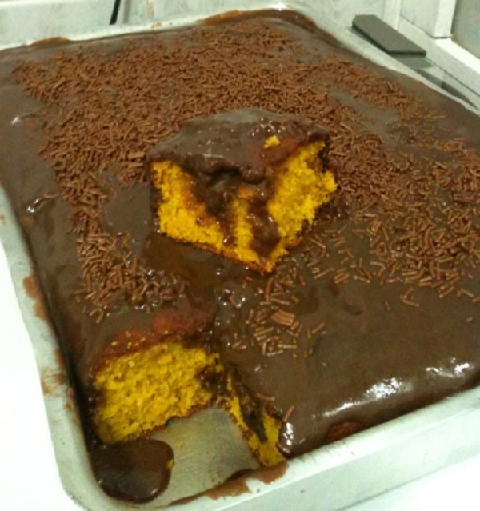
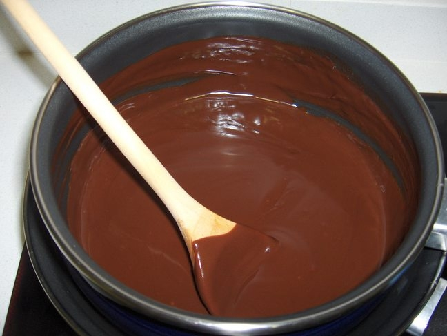

Voltar a pagina incial
Bolo de cenoura

Ingredientes:
- 3 cenouras médias raspadas e picadas
- 3 ovos
- 1 xícara de óleo
- 2 xícaras de açúcar
- 2 xícaras de farinha de trigo
- 1 colher de sopa de fermento em pó
- 1 pitada de sal

Ingredientes para o tabuleiro
- 3 cenouras médias raspadas e picadas
- 3 ovos
- 1 xícara de óleo
- 2 xícaras de açúcar
- 2 xícaras de farinha de trigo
- 1 colher de sopa de fermento em pó
- 1 pitada de sal
- Manteiga para untar
- Farinha para polvilhar

Ingredientes Cobertura
- 5 colheres de sopa de açúcar
- 3 colheres de sopa de chocolate em pó
- 2 colheres de sopa de manteiga
- 2 colheres de sopa de leite
Modo de preparo do bolo
- Bata no liquidificador todos os ingredientes, acrescentando a farinha aos poucos.
- Depois unte e enfarinhe uma forma e despeje a massa nela. Asse em forno médio por cerca de 40 minutos. Tire do forno, espere amornar e desenforme.
Modo de preparo da cobertura
- Enquanto o bolo assa, em uma panela, coloque todos os ingredientes da cobertura e mexa bem até levantar fervura.
- Depois espalhe sobre o bolo ainda quente e quando esfriar irá formar uma casquinha.
- Simples, não? Espero que gostem!
Voltar a pagina incial